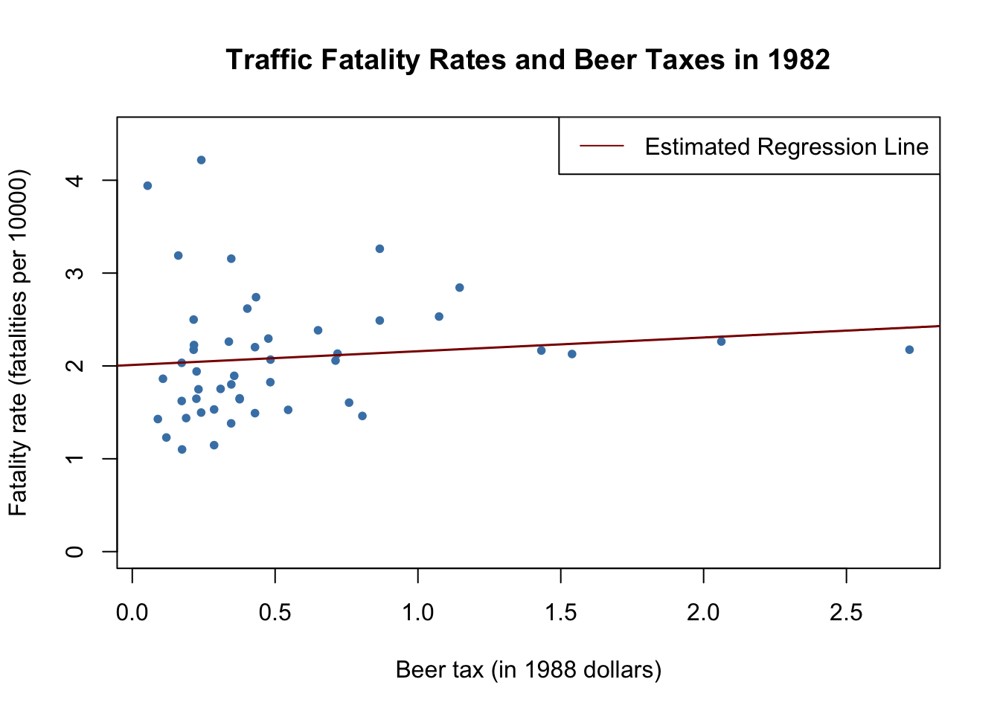
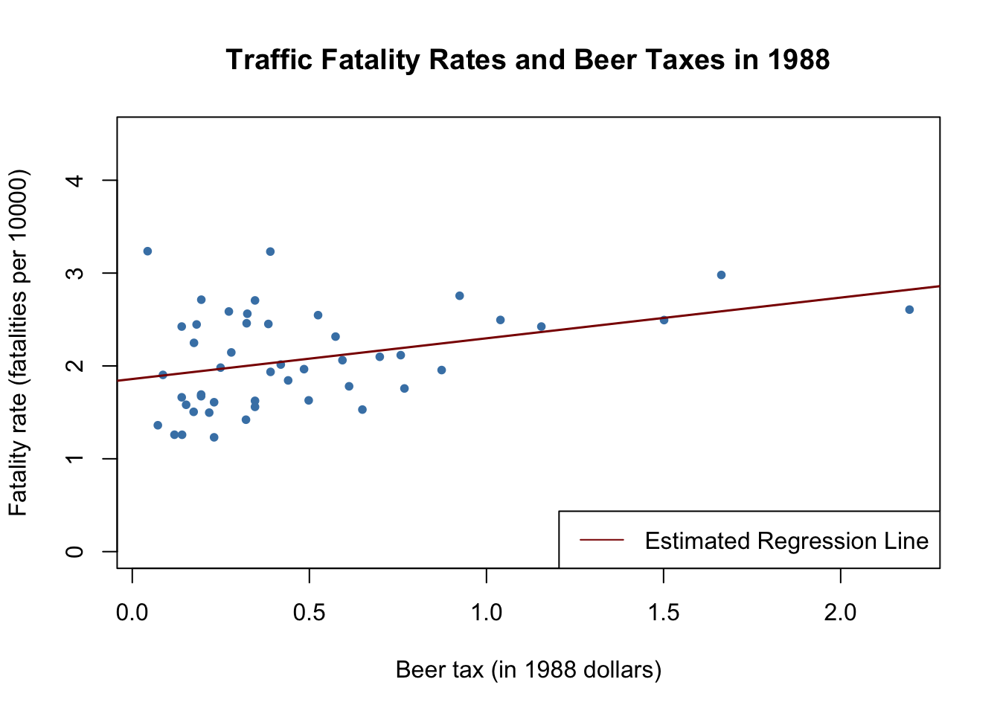
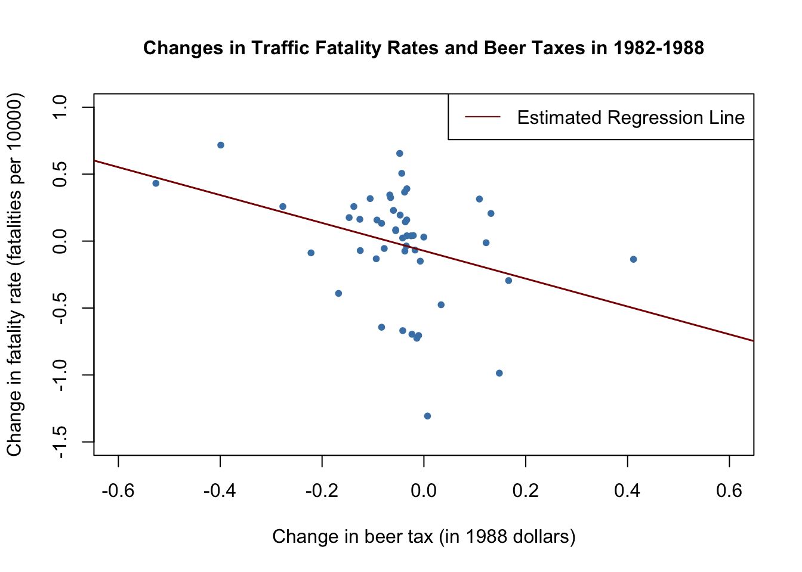

10 Regression with Panel Data
Regression using panel data may mitigate omitted variable bias when there is no information on variables that correlate with both the regressors of interest and the dependent variable and if these variables are constant in the time dimension or across entities. When panel data is available, panel regression methods can be used to improve upon multiple regression models. This is because multiple regression models may produce results that lack internal validity in such a setting, as discussed in Chapter 9.
This chapter covers the following topics:
- notation for panel data,
- fixed effects regression using time and/or entity fixed effects,
- computation of standard errors in fixed effects regression models.
Following the book, for applications we make use of the dataset Fatalities from the AER package (Christian Kleiber and Zeileis 2008) which is a panel dataset reporting annual state level observations on U.S. traffic fatalities for the period 1982 through 1988. The applications analyze if there are effects of alcohol taxes and drunk driving laws on road fatalities and, if present, how strong these effects are.
We introduce plm(), a convenient R function that enables us to estimate linear panel regression models which comes with the package plm (Croissant, Millo, and Tappe 2023). Usage of plm() is very similar as for the function lm() which we have used throughout the previous chapters for estimation of simple and multiple regression models.
The following packages and their dependencies are needed for reproduction of the code chunks presented throughout this chapter on your computer:
- AER
- plm
- stargazer
Check whether the following code chunk runs without any errors.
10.1 Panel Data
Key Concept 10.1
Notation for Panel Data
In contrast to cross-section data where we have observations on \(n\) subjects (entities), panel data has observations on \(n\) entities at \(T\geq2\) time periods. This is denoted as
\[(X_{it},Y_{it}), \ i=1,\dots,n \ \ \ \text{and} \ \ \ t=1,\dots,T \] where the index \(i\) refers to the entity while \(t\) refers to the time period.
Sometimes panel data is also called longitudinal data as it adds a temporal dimension to cross-sectional data. Let us have a look at the dataset Fatalities by checking its structure and listing the first few observations.
# load the packagees and the dataset
library(AER)
library(plm)
data(Fatalities)
# pdata.frame() declares the data as panel data.
Fatalities<- pdata.frame(Fatalities, index = c("state", "year"))# obtain the dimension and inspect the structure
is.data.frame(Fatalities)
#> [1] TRUE
dim(Fatalities)
#> [1] 336 34str(Fatalities)
#> Classes 'pdata.frame' and 'data.frame': 336 obs. of 34 variables:
#> $ state : Factor w/ 48 levels "al","az","ar",..: 1 1 1 1 1 1 1 2 2 2 ...
#> ..- attr(*, "names")= chr [1:336] "al-1982" "al-1983" "al-1984" "al-1985" ...
#> ..- attr(*, "index")=Classes 'pindex' and 'data.frame': 336 obs. of 2 variables:
#> .. ..$ state: Factor w/ 48 levels "al","az","ar",..: 1 1 1 1 1 1 1 2 2 2 ...
#> .. ..$ year : Factor w/ 7 levels "1982","1983",..: 1 2 3 4 5 6 7 1 2 3 ...
#> $ year : Factor w/ 7 levels "1982","1983",..: 1 2 3 4 5 6 7 1 2 3 ...
#> ..- attr(*, "names")= chr [1:336] "al-1982" "al-1983" "al-1984" "al-1985" ...
#> ..- attr(*, "index")=Classes 'pindex' and 'data.frame': 336 obs. of 2 variables:
#> .. ..$ state: Factor w/ 48 levels "al","az","ar",..: 1 1 1 1 1 1 1 2 2 2 ...
#> .. ..$ year : Factor w/ 7 levels "1982","1983",..: 1 2 3 4 5 6 7 1 2 3 ...
#> $ spirits : 'pseries' Named num 1.37 1.36 1.32 1.28 1.23 ...
#> ..- attr(*, "names")= chr [1:336] "al-1982" "al-1983" "al-1984" "al-1985" ...
#> ..- attr(*, "index")=Classes 'pindex' and 'data.frame': 336 obs. of 2 variables:
#> .. ..$ state: Factor w/ 48 levels "al","az","ar",..: 1 1 1 1 1 1 1 2 2 2 ...
#> .. ..$ year : Factor w/ 7 levels "1982","1983",..: 1 2 3 4 5 6 7 1 2 3 ...
#> $ unemp : 'pseries' Named num 14.4 13.7 11.1 8.9 9.8 ...
#> ..- attr(*, "names")= chr [1:336] "al-1982" "al-1983" "al-1984" "al-1985" ...
#> ..- attr(*, "index")=Classes 'pindex' and 'data.frame': 336 obs. of 2 variables:
#> .. ..$ state: Factor w/ 48 levels "al","az","ar",..: 1 1 1 1 1 1 1 2 2 2 ...
#> .. ..$ year : Factor w/ 7 levels "1982","1983",..: 1 2 3 4 5 6 7 1 2 3 ...
#> $ income : 'pseries' Named num 10544 10733 11109 11333 11662 ...
#> ..- attr(*, "names")= chr [1:336] "al-1982" "al-1983" "al-1984" "al-1985" ...
#> ..- attr(*, "index")=Classes 'pindex' and 'data.frame': 336 obs. of 2 variables:
#> .. ..$ state: Factor w/ 48 levels "al","az","ar",..: 1 1 1 1 1 1 1 2 2 2 ...
#> .. ..$ year : Factor w/ 7 levels "1982","1983",..: 1 2 3 4 5 6 7 1 2 3 ...
#> $ emppop : 'pseries' Named num 50.7 52.1 54.2 55.3 56.5 ...
#> ..- attr(*, "names")= chr [1:336] "al-1982" "al-1983" "al-1984" "al-1985" ...
#> ..- attr(*, "index")=Classes 'pindex' and 'data.frame': 336 obs. of 2 variables:
#> .. ..$ state: Factor w/ 48 levels "al","az","ar",..: 1 1 1 1 1 1 1 2 2 2 ...
#> .. ..$ year : Factor w/ 7 levels "1982","1983",..: 1 2 3 4 5 6 7 1 2 3 ...
#> $ beertax : 'pseries' Named num 1.54 1.79 1.71 1.65 1.61 ...
#> ..- attr(*, "names")= chr [1:336] "al-1982" "al-1983" "al-1984" "al-1985" ...
#> ..- attr(*, "index")=Classes 'pindex' and 'data.frame': 336 obs. of 2 variables:
#> .. ..$ state: Factor w/ 48 levels "al","az","ar",..: 1 1 1 1 1 1 1 2 2 2 ...
#> .. ..$ year : Factor w/ 7 levels "1982","1983",..: 1 2 3 4 5 6 7 1 2 3 ...
#> $ baptist : 'pseries' Named num 30.4 30.3 30.3 30.3 30.3 ...
#> ..- attr(*, "names")= chr [1:336] "al-1982" "al-1983" "al-1984" "al-1985" ...
#> ..- attr(*, "index")=Classes 'pindex' and 'data.frame': 336 obs. of 2 variables:
#> .. ..$ state: Factor w/ 48 levels "al","az","ar",..: 1 1 1 1 1 1 1 2 2 2 ...
#> .. ..$ year : Factor w/ 7 levels "1982","1983",..: 1 2 3 4 5 6 7 1 2 3 ...
#> $ mormon : 'pseries' Named num 0.328 0.343 0.359 0.376 0.393 ...
#> ..- attr(*, "names")= chr [1:336] "al-1982" "al-1983" "al-1984" "al-1985" ...
#> ..- attr(*, "index")=Classes 'pindex' and 'data.frame': 336 obs. of 2 variables:
#> .. ..$ state: Factor w/ 48 levels "al","az","ar",..: 1 1 1 1 1 1 1 2 2 2 ...
#> .. ..$ year : Factor w/ 7 levels "1982","1983",..: 1 2 3 4 5 6 7 1 2 3 ...
#> $ drinkage : 'pseries' Named num 19 19 19 19.7 21 ...
#> ..- attr(*, "names")= chr [1:336] "al-1982" "al-1983" "al-1984" "al-1985" ...
#> ..- attr(*, "index")=Classes 'pindex' and 'data.frame': 336 obs. of 2 variables:
#> .. ..$ state: Factor w/ 48 levels "al","az","ar",..: 1 1 1 1 1 1 1 2 2 2 ...
#> .. ..$ year : Factor w/ 7 levels "1982","1983",..: 1 2 3 4 5 6 7 1 2 3 ...
#> $ dry : 'pseries' Named num 25 23 24 23.6 23.5 ...
#> ..- attr(*, "names")= chr [1:336] "al-1982" "al-1983" "al-1984" "al-1985" ...
#> ..- attr(*, "index")=Classes 'pindex' and 'data.frame': 336 obs. of 2 variables:
#> .. ..$ state: Factor w/ 48 levels "al","az","ar",..: 1 1 1 1 1 1 1 2 2 2 ...
#> .. ..$ year : Factor w/ 7 levels "1982","1983",..: 1 2 3 4 5 6 7 1 2 3 ...
#> $ youngdrivers: 'pseries' Named num 0.212 0.211 0.211 0.211 0.213 ...
#> ..- attr(*, "names")= chr [1:336] "al-1982" "al-1983" "al-1984" "al-1985" ...
#> ..- attr(*, "index")=Classes 'pindex' and 'data.frame': 336 obs. of 2 variables:
#> .. ..$ state: Factor w/ 48 levels "al","az","ar",..: 1 1 1 1 1 1 1 2 2 2 ...
#> .. ..$ year : Factor w/ 7 levels "1982","1983",..: 1 2 3 4 5 6 7 1 2 3 ...
#> $ miles : 'pseries' Named num 7234 7836 8263 8727 8953 ...
#> ..- attr(*, "names")= chr [1:336] "al-1982" "al-1983" "al-1984" "al-1985" ...
#> ..- attr(*, "index")=Classes 'pindex' and 'data.frame': 336 obs. of 2 variables:
#> .. ..$ state: Factor w/ 48 levels "al","az","ar",..: 1 1 1 1 1 1 1 2 2 2 ...
#> .. ..$ year : Factor w/ 7 levels "1982","1983",..: 1 2 3 4 5 6 7 1 2 3 ...
#> $ breath : Factor w/ 2 levels "no","yes": 1 1 1 1 1 1 1 1 1 1 ...
#> ..- attr(*, "names")= chr [1:336] "al-1982" "al-1983" "al-1984" "al-1985" ...
#> ..- attr(*, "index")=Classes 'pindex' and 'data.frame': 336 obs. of 2 variables:
#> .. ..$ state: Factor w/ 48 levels "al","az","ar",..: 1 1 1 1 1 1 1 2 2 2 ...
#> .. ..$ year : Factor w/ 7 levels "1982","1983",..: 1 2 3 4 5 6 7 1 2 3 ...
#> $ jail : Factor w/ 2 levels "no","yes": 1 1 1 1 1 1 1 2 2 2 ...
#> ..- attr(*, "names")= chr [1:336] "al-1982" "al-1983" "al-1984" "al-1985" ...
#> ..- attr(*, "index")=Classes 'pindex' and 'data.frame': 336 obs. of 2 variables:
#> .. ..$ state: Factor w/ 48 levels "al","az","ar",..: 1 1 1 1 1 1 1 2 2 2 ...
#> .. ..$ year : Factor w/ 7 levels "1982","1983",..: 1 2 3 4 5 6 7 1 2 3 ...
#> $ service : Factor w/ 2 levels "no","yes": 1 1 1 1 1 1 1 2 2 2 ...
#> ..- attr(*, "names")= chr [1:336] "al-1982" "al-1983" "al-1984" "al-1985" ...
#> ..- attr(*, "index")=Classes 'pindex' and 'data.frame': 336 obs. of 2 variables:
#> .. ..$ state: Factor w/ 48 levels "al","az","ar",..: 1 1 1 1 1 1 1 2 2 2 ...
#> .. ..$ year : Factor w/ 7 levels "1982","1983",..: 1 2 3 4 5 6 7 1 2 3 ...
#> $ fatal : 'pseries' Named int 839 930 932 882 1081 1110 1023 724 675 869 ...
#> ..- attr(*, "names")= chr [1:336] "al-1982" "al-1983" "al-1984" "al-1985" ...
#> ..- attr(*, "index")=Classes 'pindex' and 'data.frame': 336 obs. of 2 variables:
#> .. ..$ state: Factor w/ 48 levels "al","az","ar",..: 1 1 1 1 1 1 1 2 2 2 ...
#> .. ..$ year : Factor w/ 7 levels "1982","1983",..: 1 2 3 4 5 6 7 1 2 3 ...
#> $ nfatal : 'pseries' Named int 146 154 165 146 172 181 139 131 112 149 ...
#> ..- attr(*, "names")= chr [1:336] "al-1982" "al-1983" "al-1984" "al-1985" ...
#> ..- attr(*, "index")=Classes 'pindex' and 'data.frame': 336 obs. of 2 variables:
#> .. ..$ state: Factor w/ 48 levels "al","az","ar",..: 1 1 1 1 1 1 1 2 2 2 ...
#> .. ..$ year : Factor w/ 7 levels "1982","1983",..: 1 2 3 4 5 6 7 1 2 3 ...
#> $ sfatal : 'pseries' Named int 99 98 94 98 119 114 89 76 60 81 ...
#> ..- attr(*, "names")= chr [1:336] "al-1982" "al-1983" "al-1984" "al-1985" ...
#> ..- attr(*, "index")=Classes 'pindex' and 'data.frame': 336 obs. of 2 variables:
#> .. ..$ state: Factor w/ 48 levels "al","az","ar",..: 1 1 1 1 1 1 1 2 2 2 ...
#> .. ..$ year : Factor w/ 7 levels "1982","1983",..: 1 2 3 4 5 6 7 1 2 3 ...
#> $ fatal1517 : 'pseries' Named int 53 71 49 66 82 94 66 40 40 51 ...
#> ..- attr(*, "names")= chr [1:336] "al-1982" "al-1983" "al-1984" "al-1985" ...
#> ..- attr(*, "index")=Classes 'pindex' and 'data.frame': 336 obs. of 2 variables:
#> .. ..$ state: Factor w/ 48 levels "al","az","ar",..: 1 1 1 1 1 1 1 2 2 2 ...
#> .. ..$ year : Factor w/ 7 levels "1982","1983",..: 1 2 3 4 5 6 7 1 2 3 ...
#> $ nfatal1517 : 'pseries' Named int 9 8 7 9 10 11 8 7 7 8 ...
#> ..- attr(*, "names")= chr [1:336] "al-1982" "al-1983" "al-1984" "al-1985" ...
#> ..- attr(*, "index")=Classes 'pindex' and 'data.frame': 336 obs. of 2 variables:
#> .. ..$ state: Factor w/ 48 levels "al","az","ar",..: 1 1 1 1 1 1 1 2 2 2 ...
#> .. ..$ year : Factor w/ 7 levels "1982","1983",..: 1 2 3 4 5 6 7 1 2 3 ...
#> $ fatal1820 : 'pseries' Named int 99 108 103 100 120 127 105 81 83 118 ...
#> ..- attr(*, "names")= chr [1:336] "al-1982" "al-1983" "al-1984" "al-1985" ...
#> ..- attr(*, "index")=Classes 'pindex' and 'data.frame': 336 obs. of 2 variables:
#> .. ..$ state: Factor w/ 48 levels "al","az","ar",..: 1 1 1 1 1 1 1 2 2 2 ...
#> .. ..$ year : Factor w/ 7 levels "1982","1983",..: 1 2 3 4 5 6 7 1 2 3 ...
#> $ nfatal1820 : 'pseries' Named int 34 26 25 23 23 31 24 16 19 34 ...
#> ..- attr(*, "names")= chr [1:336] "al-1982" "al-1983" "al-1984" "al-1985" ...
#> ..- attr(*, "index")=Classes 'pindex' and 'data.frame': 336 obs. of 2 variables:
#> .. ..$ state: Factor w/ 48 levels "al","az","ar",..: 1 1 1 1 1 1 1 2 2 2 ...
#> .. ..$ year : Factor w/ 7 levels "1982","1983",..: 1 2 3 4 5 6 7 1 2 3 ...
#> $ fatal2124 : 'pseries' Named int 120 124 118 114 119 138 123 96 80 123 ...
#> ..- attr(*, "names")= chr [1:336] "al-1982" "al-1983" "al-1984" "al-1985" ...
#> ..- attr(*, "index")=Classes 'pindex' and 'data.frame': 336 obs. of 2 variables:
#> .. ..$ state: Factor w/ 48 levels "al","az","ar",..: 1 1 1 1 1 1 1 2 2 2 ...
#> .. ..$ year : Factor w/ 7 levels "1982","1983",..: 1 2 3 4 5 6 7 1 2 3 ...
#> $ nfatal2124 : 'pseries' Named int 32 35 34 45 29 30 25 36 17 33 ...
#> ..- attr(*, "names")= chr [1:336] "al-1982" "al-1983" "al-1984" "al-1985" ...
#> ..- attr(*, "index")=Classes 'pindex' and 'data.frame': 336 obs. of 2 variables:
#> .. ..$ state: Factor w/ 48 levels "al","az","ar",..: 1 1 1 1 1 1 1 2 2 2 ...
#> .. ..$ year : Factor w/ 7 levels "1982","1983",..: 1 2 3 4 5 6 7 1 2 3 ...
#> $ afatal : 'pseries' Named num 309 342 305 277 361 ...
#> ..- attr(*, "names")= chr [1:336] "al-1982" "al-1983" "al-1984" "al-1985" ...
#> ..- attr(*, "index")=Classes 'pindex' and 'data.frame': 336 obs. of 2 variables:
#> .. ..$ state: Factor w/ 48 levels "al","az","ar",..: 1 1 1 1 1 1 1 2 2 2 ...
#> .. ..$ year : Factor w/ 7 levels "1982","1983",..: 1 2 3 4 5 6 7 1 2 3 ...
#> $ pop : 'pseries' Named num 3942002 3960008 3988992 4021008 4049994 ...
#> ..- attr(*, "names")= chr [1:336] "al-1982" "al-1983" "al-1984" "al-1985" ...
#> ..- attr(*, "index")=Classes 'pindex' and 'data.frame': 336 obs. of 2 variables:
#> .. ..$ state: Factor w/ 48 levels "al","az","ar",..: 1 1 1 1 1 1 1 2 2 2 ...
#> .. ..$ year : Factor w/ 7 levels "1982","1983",..: 1 2 3 4 5 6 7 1 2 3 ...
#> $ pop1517 : 'pseries' Named num 209000 202000 197000 195000 204000 ...
#> ..- attr(*, "names")= chr [1:336] "al-1982" "al-1983" "al-1984" "al-1985" ...
#> ..- attr(*, "index")=Classes 'pindex' and 'data.frame': 336 obs. of 2 variables:
#> .. ..$ state: Factor w/ 48 levels "al","az","ar",..: 1 1 1 1 1 1 1 2 2 2 ...
#> .. ..$ year : Factor w/ 7 levels "1982","1983",..: 1 2 3 4 5 6 7 1 2 3 ...
#> $ pop1820 : 'pseries' Named num 221553 219125 216724 214349 212000 ...
#> ..- attr(*, "names")= chr [1:336] "al-1982" "al-1983" "al-1984" "al-1985" ...
#> ..- attr(*, "index")=Classes 'pindex' and 'data.frame': 336 obs. of 2 variables:
#> .. ..$ state: Factor w/ 48 levels "al","az","ar",..: 1 1 1 1 1 1 1 2 2 2 ...
#> .. ..$ year : Factor w/ 7 levels "1982","1983",..: 1 2 3 4 5 6 7 1 2 3 ...
#> $ pop2124 : 'pseries' Named num 290000 290000 288000 284000 263000 ...
#> ..- attr(*, "names")= chr [1:336] "al-1982" "al-1983" "al-1984" "al-1985" ...
#> ..- attr(*, "index")=Classes 'pindex' and 'data.frame': 336 obs. of 2 variables:
#> .. ..$ state: Factor w/ 48 levels "al","az","ar",..: 1 1 1 1 1 1 1 2 2 2 ...
#> .. ..$ year : Factor w/ 7 levels "1982","1983",..: 1 2 3 4 5 6 7 1 2 3 ...
#> $ milestot : 'pseries' Named num 28516 31032 32961 35091 36259 ...
#> ..- attr(*, "names")= chr [1:336] "al-1982" "al-1983" "al-1984" "al-1985" ...
#> ..- attr(*, "index")=Classes 'pindex' and 'data.frame': 336 obs. of 2 variables:
#> .. ..$ state: Factor w/ 48 levels "al","az","ar",..: 1 1 1 1 1 1 1 2 2 2 ...
#> .. ..$ year : Factor w/ 7 levels "1982","1983",..: 1 2 3 4 5 6 7 1 2 3 ...
#> $ unempus : 'pseries' Named num 9.7 9.6 7.5 7.2 7 ...
#> ..- attr(*, "names")= chr [1:336] "al-1982" "al-1983" "al-1984" "al-1985" ...
#> ..- attr(*, "index")=Classes 'pindex' and 'data.frame': 336 obs. of 2 variables:
#> .. ..$ state: Factor w/ 48 levels "al","az","ar",..: 1 1 1 1 1 1 1 2 2 2 ...
#> .. ..$ year : Factor w/ 7 levels "1982","1983",..: 1 2 3 4 5 6 7 1 2 3 ...
#> $ emppopus : 'pseries' Named num 57.8 57.9 59.5 60.1 60.7 ...
#> ..- attr(*, "names")= chr [1:336] "al-1982" "al-1983" "al-1984" "al-1985" ...
#> ..- attr(*, "index")=Classes 'pindex' and 'data.frame': 336 obs. of 2 variables:
#> .. ..$ state: Factor w/ 48 levels "al","az","ar",..: 1 1 1 1 1 1 1 2 2 2 ...
#> .. ..$ year : Factor w/ 7 levels "1982","1983",..: 1 2 3 4 5 6 7 1 2 3 ...
#> $ gsp : 'pseries' Named num -0.0221 0.0466 0.0628 0.0275 0.0321 ...
#> ..- attr(*, "names")= chr [1:336] "al-1982" "al-1983" "al-1984" "al-1985" ...
#> ..- attr(*, "index")=Classes 'pindex' and 'data.frame': 336 obs. of 2 variables:
#> .. ..$ state: Factor w/ 48 levels "al","az","ar",..: 1 1 1 1 1 1 1 2 2 2 ...
#> .. ..$ year : Factor w/ 7 levels "1982","1983",..: 1 2 3 4 5 6 7 1 2 3 ...
#> - attr(*, "index")=Classes 'pindex' and 'data.frame': 336 obs. of 2 variables:
#> ..$ state: Factor w/ 48 levels "al","az","ar",..: 1 1 1 1 1 1 1 2 2 2 ...
#> ..$ year : Factor w/ 7 levels "1982","1983",..: 1 2 3 4 5 6 7 1 2 3 ...# list the first few observations
head(Fatalities)
#> state year spirits unemp income emppop beertax baptist mormon
#> al-1982 al 1982 1.37 14.4 10544.15 50.69204 1.539379 30.3557 0.32829
#> al-1983 al 1983 1.36 13.7 10732.80 52.14703 1.788991 30.3336 0.34341
#> al-1984 al 1984 1.32 11.1 11108.79 54.16809 1.714286 30.3115 0.35924
#> al-1985 al 1985 1.28 8.9 11332.63 55.27114 1.652542 30.2895 0.37579
#> al-1986 al 1986 1.23 9.8 11661.51 56.51450 1.609907 30.2674 0.39311
#> al-1987 al 1987 1.18 7.8 11944.00 57.50988 1.560000 30.2453 0.41123
#> drinkage dry youngdrivers miles breath jail service fatal nfatal
#> al-1982 19.00 25.0063 0.211572 7233.887 no no no 839 146
#> al-1983 19.00 22.9942 0.210768 7836.348 no no no 930 154
#> al-1984 19.00 24.0426 0.211484 8262.990 no no no 932 165
#> al-1985 19.67 23.6339 0.211140 8726.917 no no no 882 146
#> al-1986 21.00 23.4647 0.213400 8952.854 no no no 1081 172
#> al-1987 21.00 23.7924 0.215527 9166.302 no no no 1110 181
#> sfatal fatal1517 nfatal1517 fatal1820 nfatal1820 fatal2124 nfatal2124
#> al-1982 99 53 9 99 34 120 32
#> al-1983 98 71 8 108 26 124 35
#> al-1984 94 49 7 103 25 118 34
#> al-1985 98 66 9 100 23 114 45
#> al-1986 119 82 10 120 23 119 29
#> al-1987 114 94 11 127 31 138 30
#> afatal pop pop1517 pop1820 pop2124 milestot unempus emppopus
#> al-1982 309.438 3942002 208999.6 221553.4 290000.1 28516 9.7 57.8
#> al-1983 341.834 3960008 202000.1 219125.5 290000.2 31032 9.6 57.9
#> al-1984 304.872 3988992 197000.0 216724.1 288000.2 32961 7.5 59.5
#> al-1985 276.742 4021008 194999.7 214349.0 284000.3 35091 7.2 60.1
#> al-1986 360.716 4049994 203999.9 212000.0 263000.3 36259 7.0 60.7
#> al-1987 368.421 4082999 204999.8 208998.5 258999.8 37426 6.2 61.5
#> gsp
#> al-1982 -0.02212476
#> al-1983 0.04655825
#> al-1984 0.06279784
#> al-1985 0.02748997
#> al-1986 0.03214295
#> al-1987 0.04897637# summarize the variables 'state' and 'year'
summary(Fatalities[, c(1, 2)])
#> state year
#> al : 7 1982:48
#> az : 7 1983:48
#> ar : 7 1984:48
#> ca : 7 1985:48
#> co : 7 1986:48
#> ct : 7 1987:48
#> (Other):294 1988:48We find that the dataset consists of 336 observations on 34 variables. Notice that the variable state is a factor variable with 48 levels (one for each of the 48 contiguous federal states of the U.S.). The variable year is also a factor variable that has 7 levels identifying the time period when the observation was made. This gives us \(7\times48 = 336\) observations in total. Since all variables are observed for all entities and over all time periods, the panel is balanced. If there were missing data for at least one entity in at least one time period we would call the panel unbalanced.
Example: Traffic Deaths and Alcohol Taxes
We start by reproducing Figure 10.1 of the book. To this end we estimate simple regressions using data for years 1982 and 1988 that model the relationship between beer tax (adjusted for 1988 dollars) and the traffic fatality rate, measured as the number of fatalities per 10000 inhabitants. Afterwards, we plot the data and add the corresponding estimated regression functions.
# define the fatality rate
Fatalities$fatal_rate <- Fatalities$fatal / Fatalities$pop * 10000
# subset the data
Fatalities1982 <- subset(Fatalities, year == "1982")
Fatalities1988 <- subset(Fatalities, year == "1988")# estimate simple regression models using 1982 and 1988 data
fatal1982_mod <- lm(fatal_rate ~ beertax, data = Fatalities1982)
fatal1988_mod <- lm(fatal_rate ~ beertax, data = Fatalities1988)
coeftest(fatal1982_mod, vcov. = vcovHC, type = "HC1")
#>
#> t test of coefficients:
#>
#> Estimate Std. Error t value Pr(>|t|)
#> (Intercept) 2.01038 0.14957 13.4408 <2e-16 ***
#> beertax 0.14846 0.13261 1.1196 0.2687
#> ---
#> Signif. codes: 0 '***' 0.001 '**' 0.01 '*' 0.05 '.' 0.1 ' ' 1
coeftest(fatal1988_mod, vcov. = vcovHC, type = "HC1")
#>
#> t test of coefficients:
#>
#> Estimate Std. Error t value Pr(>|t|)
#> (Intercept) 1.85907 0.11461 16.2205 < 2.2e-16 ***
#> beertax 0.43875 0.12786 3.4314 0.001279 **
#> ---
#> Signif. codes: 0 '***' 0.001 '**' 0.01 '*' 0.05 '.' 0.1 ' ' 1The estimated regression functions are \[\begin{align*} \widehat{FatalityRate} =& \, \underset{(0.15)}{2.01} + \underset{(0.13)}{0.15} \times BeerTax \quad (1982 \text{ data}), \\ \widehat{FatalityRate} =& \, \underset{(0.11)}{1.86} + \underset{(0.13)}{0.44} \times BeerTax \quad (1988 \text{ data}). \end{align*}\]
# plot the observations and add the estimated regression line for 1982 data
plot(x = as.double(Fatalities1982$beertax),
y = as.double(Fatalities1982$fatal_rate),
xlab = "Beer tax (in 1988 dollars)",
ylab = "Fatality rate (fatalities per 10000)",
main = "Traffic Fatality Rates and Beer Taxes in 1982",
ylim = c(0, 4.5),
pch = 20,
col = "steelblue")
abline(fatal1982_mod, lwd = 1.5, col="darkred")
legend("topright",lty=1,col="darkred","Estimated Regression Line")
# plot observations and add estimated regression line for 1988 data
plot(x = as.double(Fatalities1988$beertax),
y = as.double(Fatalities1988$fatal_rate),
xlab = "Beer tax (in 1988 dollars)",
ylab = "Fatality rate (fatalities per 10000)",
main = "Traffic Fatality Rates and Beer Taxes in 1988",
ylim = c(0, 4.5),
pch = 20,
col = "steelblue")
abline(fatal1988_mod, lwd = 1.5,col="darkred")
legend("bottomright",lty=1,col="darkred","Estimated Regression Line")
In both plots, each point represents observations of beer tax and fatality rate for a given state in the respective year. The regression results indicate a positive relationship between the beer tax and the fatality rate for both years. The estimated coefficient on beer tax for the 1988 data is almost three times as large as for the 1982 dataset. This is contrary to our expectations: alcohol taxes are supposed to lower the rate of traffic fatalities. As we known from Chapter 6, this is possibly due to omitted variable bias, since both models do not include any covariates, e.g., economic conditions. This could be corrected by using a multiple regression approach. However, this cannot account for omitted unobservable factors that differ from state to state but can be assumed to be constant over the observation span, e.g., the populations’ attitude towards drunk driving. As shown in the next section, panel data allow us to hold such factors constant.
10.2 Panel Data with Two Time Periods: “Before and After” Comparisons
Suppose there are only \(T=2\) time periods \(t=1982,1988\). This allows us to analyze differences in changes of the fatality rate from year 1982 to 1988. We start by considering the population regression model \[FatalityRate_{it} = \beta_0 + \beta_1 BeerTax_{it} + \beta_2 Z_{i} + u_{it}\] where the \(Z_i\) are state specific characteristics that differ between states but are constant over time. For \(t=1982\) and \(t=1988\) we have \[\begin{align*} FatalityRate_{i1982} =&\, \beta_0 + \beta_1 BeerTax_{i1982} + \beta_2 Z_i + u_{i1982}, \\ FatalityRate_{i1988} =&\, \beta_0 + \beta_1 BeerTax_{i1988} + \beta_2 Z_i + u_{i1988}. \end{align*}\]
We can eliminate the \(Z_i\) by regressing the difference in the fatality rate between 1988 and 1982 on the difference in beer tax between those years: \[FatalityRate_{i1988} - FatalityRate_{i1982} = \beta_1 (BeerTax_{i1988} - BeerTax_{i1982}) + u_{i1988} - u_{i1982}.\] This regression model, where the difference in fatality rate between 1988 and 1982 is regressed on the difference in beer tax between those years, yields an estimate for \(\beta_1\) that is robust to a possible bias due to omission of \(Z_i\), as these influences are eliminated from the model. Next we will use R to estimate a regression based on the differenced data and to plot the estimated regression function.
# compute the differences
diff_fatal_rate <- Fatalities1988$fatal_rate - Fatalities1982$fatal_rate
diff_beertax <- Fatalities1988$beertax - Fatalities1982$beertax
# estimate a regression using differenced data
fatal_diff_mod <- lm(diff_fatal_rate ~ diff_beertax)
coeftest(fatal_diff_mod, vcov = vcovHC, type = "HC1")
#>
#> t test of coefficients:
#>
#> Estimate Std. Error t value Pr(>|t|)
#> (Intercept) -0.072037 0.065355 -1.1022 0.276091
#> diff_beertax -1.040973 0.355006 -2.9323 0.005229 **
#> ---
#> Signif. codes: 0 '***' 0.001 '**' 0.01 '*' 0.05 '.' 0.1 ' ' 1Including the intercept allows for a change in the mean fatality rate in the time between 1982 and 1988 in the absence of a change in the beer tax.
We obtain the OLS estimated regression function \[\widehat{FatalityRate_{i1988} - FatalityRate_{i1982}} = -\underset{(0.065)}{0.072} -\underset{(0.36)}{1.04} \times (BeerTax_{i1988}-BeerTax_{i1982}).\]
# plot the differenced data
plot(x = as.double(diff_beertax),
y = as.double(diff_fatal_rate),
xlab = "Change in beer tax (in 1988 dollars)",
ylab = "Change in fatality rate (fatalities per 10000)",
main = "Changes in Traffic Fatality Rates and Beer Taxes in 1982-1988",
cex.main=1,
xlim = c(-0.6, 0.6),
ylim = c(-1.5, 1),
pch = 20,
col = "steelblue")
# add the regression line to plot
abline(fatal_diff_mod, lwd = 1.5,col="darkred")
#add legend
legend("topright",lty=1,col="darkred","Estimated Regression Line")
The estimated coefficient on beer tax is now negative and significantly different from zero at \(5\%\). Its interpretation is that raising the beer tax by \(\$1\) causes traffic fatalities to decrease by \(1.04\) per \(10000\) people. This is rather large as the average fatality rate is approximately \(2\) persons per \(10000\) people.
# compute mean fatality rate over all states for all time periods
mean(Fatalities$fatal_rate)
#> [1] 2.040444Once more this outcome is likely to be a consequence of omitting factors in the single-year regression that influence the fatality rate and are correlated with the beer tax and change over time. The message is that we need to be more careful and control for such factors before drawing conclusions about the effect of a raise in beer taxes.
The approach presented in this section discards information for years \(1983\) to \(1987\). The fixed effects method that allows us to use data for more than \(T = 2\) time periods and enables us to add control variables to the analysis.
10.3 Fixed Effects Regression
Consider the panel regression model
\[Y_{it} = \beta_0 + \beta_1 X_{it} + \beta_2 Z_i + u_{it}\] where the \(Z_i\) are unobserved time-invariant heterogeneities across the entities \(i=1,\dots,n\). We aim to estimate \(\beta_1\), the effect on \(Y_i\) of a change in \(X_i\) holding constant \(Z_i\). Letting \(\alpha_i = \beta_0 + \beta_2 Z_i\) we obtain the model \[\begin{align} Y_{it} = \alpha_i + \beta_1 X_{it} + u_{it} \tag{10.1}. \end{align}\] Having individual specific intercepts \(\alpha_i\), \(i=1,\dots,n\), where each of these can be understood as the fixed effect of entity \(i\), this model is called the fixed effects model. The variation in the \(\alpha_i\), \(i=1,\dots,n\) comes from the \(Z_i\). (10.1) can be rewritten as a regression model containing \(n-1\) dummy regressors and a constant: \[\begin{align} Y_{it} = \beta_0 + \beta_1 X_{it} + \gamma_2 D2_i + \gamma_3 D3_i + \cdots + \gamma_n Dn_i + u_{it} \tag{10.2}. \end{align}\] Model (10.2) has \(n\) different intercepts — one for every entity. (10.1) and (10.2) are equivalent representations of the fixed effects model (Note: \(\beta_0\) is intercept of the fixed effect model in equation 10.2).
The fixed effects model can be generalized to contain more than just one determinant of \(Y\) that is correlated with \(X\) and changes over time. Key Concept 10.2 presents the generalized fixed effects regression model.
Key Concept 10.2
The Fixed Effects Regression Model
The fixed effects regression model is
\[\begin{align} Y_{it} = \beta_1 X_{1,it} + \cdots + \beta_k X_{k,it} + \alpha_i + u_{it} \tag{10.3} \end{align}\]
with \(i=1,\dots,n\) and \(t=1,\dots,T\). The \(\alpha_i\) are entity-specific intercepts that capture heterogeneities across entities. An equivalent representation of this model is given by
\[\begin{align} Y_{it} = \beta_0 + \beta_1 X_{1,it} + \cdots + \beta_k X_{k,it} + \gamma_2 D2_i + \gamma_3 D3_i + \cdots + \gamma_n Dn_i + u_{it} \tag{10.4} \end{align}\]
where the \(D2_i,D3_i,\dots,Dn_i\) are dummy variables.
Estimation and Inference
Software packages use a so-called “entity-demeaned” OLS algorithm which is computationally more efficient than estimating regression models with \(k+n\) regressors as needed for models (10.3) and (10.4).
Taking averages across time on both sides of (10.1) we obtain \[\begin{align*} \frac{1}{T} \sum_{t=1}^T Y_{it} =& \, \beta_1 \frac{1}{T} \sum_{t=1}^T X_{it} + \alpha_i + \frac{1}{T} \sum_{t=1}^T u_{it} \\ \overline{Y}_i =& \, \beta_1 \overline{X}_i + \alpha_i + \overline{u}_i. \end{align*}\] Subtraction from (10.1) yields \[\begin{align} \begin{split} Y_{it} - \overline{Y}_i =& \, \beta_1(X_{it}-\overline{X}_i) + (u_{it} - \overline{u}_i) \\ \overset{\sim}{Y}_{it} =& \, \beta_1 \overset{\sim}{X}_{it} + \overset{\sim}{u}_{it}. \end{split} \tag{10.5} \end{align}\] In this model, the OLS estimate of the parameter of interest \(\beta_1\) is equal to the estimate obtained using (10.2) — without the need to estimate \(n-1\) dummies and an intercept.
We conclude that there are two ways of estimating \(\beta_1\) in the fixed effects regression:
OLS of the dummy regression model as shown in (10.2).
OLS using the entity demeaned data as in (10.5).
Provided that the fixed effects regression assumptions stated in Key Concept 10.3 hold, the sampling distribution of the OLS estimator in the fixed effects regression model is normal in large samples. The variance of the estimates can be estimated and we can compute standard errors, \(t\)-statistics and confidence intervals for coefficients. In the next section, we see how to estimate a fixed effects model using R and how to obtain a model summary that reports heteroskedasticity-robust standard errors. We leave aside complicated formulas of the estimators. See Chapter 10.5 and Appendix 10.2 of the book for a discussion of theoretical aspects.
Application to Traffic Deaths
Following Key Concept 10.2, the simple fixed effects model for estimation of the relation between traffic fatality rates and the beer taxes is \[\begin{align} FatalityRate_{it} = \beta_1 BeerTax_{it} + StateFixedEffects + u_{it}, \tag{10.6} \end{align}\] a regression of the traffic fatality rate on beer tax and 48 binary regressors — one for each federal state.
We can simply use the function lm() to obtain an estimate of \(\beta_1\).
fatal_fe_lm_mod <- lm(fatal_rate ~ beertax + state - 1, data = Fatalities)
fatal_fe_lm_mod
#>
#> Call:
#> lm(formula = fatal_rate ~ beertax + state - 1, data = Fatalities)
#>
#> Coefficients:
#> beertax stateal stateaz statear stateca stateco statect statede
#> -0.6559 3.4776 2.9099 2.8227 1.9682 1.9933 1.6154 2.1700
#> statefl statega stateid stateil statein stateia stateks stateky
#> 3.2095 4.0022 2.8086 1.5160 2.0161 1.9337 2.2544 2.2601
#> statela stateme statemd statema statemi statemn statems statemo
#> 2.6305 2.3697 1.7712 1.3679 1.9931 1.5804 3.4486 2.1814
#> statemt statene statenv statenh statenj statenm stateny statenc
#> 3.1172 1.9555 2.8769 2.2232 1.3719 3.9040 1.2910 3.1872
#> statend stateoh stateok stateor statepa stateri statesc statesd
#> 1.8542 1.8032 2.9326 2.3096 1.7102 1.2126 4.0348 2.4739
#> statetn statetx stateut statevt stateva statewa statewv statewi
#> 2.6020 2.5602 2.3137 2.5116 2.1874 1.8181 2.5809 1.7184
#> statewy
#> 3.2491As discussed in the previous section, it is also possible to estimate \(\beta_1\) by applying OLS to the demeaned data, that is, to run the regression
\[\overset{\sim}{FatalityRate} = \beta_1 \overset{\sim}{BeerTax}_{it} + u_{it}. \]
# obtain demeaned data
fatal_demeaned <- with(Fatalities,
data.frame(fatal_rate = fatal_rate - ave(fatal_rate, state),
beertax = beertax - ave(beertax, state)))
# estimate the regression
summary(lm(fatal_rate ~ beertax - 1, data = fatal_demeaned))The function ave is convenient for computing group averages. We use it to obtain state specific averages of the fatality rate and the beer tax.
Alternatively one may use plm() from the package with the same name.
As for lm() we have to specify the regression formula and the data to be used in our call of plm(). Additionally, it is required to pass a vector of names of entity and time ID variables to the argument index. For Fatalities, the ID variable for entities is named state and the time id variable is year. Since the fixed effects estimator is also called the within estimator, we set model = “within”. Finally, the function coeftest() allows to obtain inference based on robust standard errors.
# estimate the fixed effects regression with plm()
fatal_fe_mod <- plm(fatal_rate ~ beertax,
data = Fatalities,
index = c("state", "year"),
model = "within")
coeftest(fatal_fe_mod, vcov. = vcovHC, type = "HC1")
#>
#> t test of coefficients:
#>
#> Estimate Std. Error t value Pr(>|t|)
#> beertax -0.65587 0.28880 -2.271 0.02388 *
#> ---
#> Signif. codes: 0 '***' 0.001 '**' 0.01 '*' 0.05 '.' 0.1 ' ' 1The estimated coefficient is again \(-0.6559\). Note that plm() uses the entity-demeaned OLS algorithm and thus does not report dummy coefficients. The estimated regression function is
\[\begin{align} \widehat{FatalityRate} = -\underset{(0.29)}{0.66} \times BeerTax + StateFixedEffects. \tag{10.7} \end{align}\]
The coefficient on \(BeerTax\) is negative and significant. The interpretation is that the estimated reduction in traffic fatalities due to an increase in the real beer tax by \(\$1\) is \(0.66\) per \(10000\) people, which is still pretty high. Although including state fixed effects eliminates the risk of a bias due to omitted factors that vary across states but not over time, we suspect that there are other omitted variables that vary over time and thus cause a bias.
10.4 Regression with Time Fixed Effects
Controlling for variables that are constant across entities but vary over time can be done by including time fixed effects. If there are only time fixed effects, the fixed effects regression model becomes \[Y_{it} = \beta_0 + \beta_1 X_{it} + \delta_2 B2_t + \cdots + \delta_T BT_t + u_{it},\] where only \(T-1\) dummies are included (\(B1\) is omitted) since the model includes an intercept. This model eliminates omitted variable bias caused by excluding unobserved variables that evolve over time but are constant across entities.
In some applications it is meaningful to include both entity and time fixed effects. The entity and time fixed effects model is \[Y_{it} = \beta_0 + \beta_1 X_{it} + \gamma_2 D2_i + \cdots + \gamma_n DT_i + \delta_2 B2_t + \cdots + \delta_T BT_t + u_{it} .\] The combined model allows to eliminate bias from unobservables that change over time but are constant over entities and it controls for factors that differ across entities but are constant over time. Such models can be estimated using the OLS algorithm that is implemented in R.
The following code chunk shows how to estimate the combined entity and time fixed effects model of the relation between fatalities and beer tax: \[FatalityRate_{it} = \beta_1 BeerTax_{it} + StateEffects + TimeFixedEffects + u_{it},\] using both lm() and plm(). It is straightforward to estimate this regression with lm() since it is just an extension of (10.6) so we only have to adjust the formula argument by adding the additional regressor year for time fixed effects. In our call of plm() we set another argument effect = “twoways” for inclusion of entity and time dummies.
# estimate a combined time and entity fixed effects regression model
# via lm()
fatal_tefe_lm_mod <- lm(fatal_rate ~ beertax + state + year - 1, data = Fatalities)
fatal_tefe_lm_mod
#>
#> Call:
#> lm(formula = fatal_rate ~ beertax + state + year - 1, data = Fatalities)
#>
#> Coefficients:
#> beertax stateal stateaz statear stateca stateco statect statede
#> -0.63998 3.51137 2.96451 2.87284 2.02618 2.04984 1.67125 2.22711
#> statefl statega stateid stateil statein stateia stateks stateky
#> 3.25132 4.02300 2.86242 1.57287 2.07123 1.98709 2.30707 2.31659
#> statela stateme statemd statema statemi statemn statems statemo
#> 2.67772 2.41713 1.82731 1.42335 2.04488 1.63488 3.49146 2.23598
#> statemt statene statenv statenh statenj statenm stateny statenc
#> 3.17160 2.00846 2.93322 2.27245 1.43016 3.95748 1.34849 3.22630
#> statend stateoh stateok stateor statepa stateri statesc statesd
#> 1.90762 1.85664 2.97776 2.36597 1.76563 1.26964 4.06496 2.52317
#> statetn statetx stateut statevt stateva statewa statewv statewi
#> 2.65670 2.61282 2.36165 2.56100 2.23618 1.87424 2.63364 1.77545
#> statewy year1983 year1984 year1985 year1986 year1987 year1988
#> 3.30791 -0.07990 -0.07242 -0.12398 -0.03786 -0.05090 -0.05180
# via plm()
fatal_tefe_mod <- plm(fatal_rate ~ beertax,
data = Fatalities,
index = c("state", "year"),
model = "within",
effect = "twoways")
coeftest(fatal_tefe_mod, vcov = vcovHC, type = "HC1")
#>
#> t test of coefficients:
#>
#> Estimate Std. Error t value Pr(>|t|)
#> beertax -0.63998 0.35015 -1.8277 0.06865 .
#> ---
#> Signif. codes: 0 '***' 0.001 '**' 0.01 '*' 0.05 '.' 0.1 ' ' 1Before discussing the outcomes we convince ourselves that state and year are of the class factor .
# check the class of 'state' and 'year'
class(Fatalities$state)
#> [1] "pseries" "factor"
class(Fatalities$year)
#> [1] "pseries" "factor"The lm() functions converts factors into dummies automatically. Since we exclude the intercept by adding -1 to the right-hand side of the regression formula, lm() estimates coefficients for \(n + (T-1) = 48 + 6 = 54\) binary variables (6 year dummies and 48 state dummies). Again, plm() only reports the estimated coefficient on \(BeerTax\).
The estimated regression function is \[\begin{align} \widehat{FatalityRate} = -\underset{(0.35)}{0.64} \times BeerTax + StateEffects + TimeFixedEffects. \tag{10.8} \end{align}\] The result \(-0.66\) is close to the estimated coefficient for the regression model including only entity fixed effects. Unsurprisingly, the coefficient is less precisely estimated but significantly different from zero at \(10\%\).
In view of (10.7) and (10.8) we conclude that the estimated relationship between traffic fatalities and the real beer tax is not affected by omitted variable bias due to factors that are constant either over time or across states..
10.5 The Fixed Effects Regression Assumptions and Standard Errors for Fixed Effects Regression
This section focuses on the entity fixed effects model and presents model assumptions that need to hold in order for OLS to produce unbiased estimates that are normally distributed in large samples. These assumptions are an extension of the assumptions made for the multiple regression model (see Key Concept 6.4) and are given in Key Concept 10.3. We also briefly discuss standard errors in fixed effects models which differ from standard errors in multiple regression as the regression error can exhibit serial correlation in panel models.
Key Concept 10.3
The Fixed Effects Regression Assumptions
In the fixed effects model \[ Y_{it} = \beta_1 X_{it} + \alpha_i + u_{it} \ \ , \ \ i=1,\dots,n, \ t=1,\dots,T, \] we assume the following:
The error term \(u_{it}\) has conditional mean zero, that is, \(E(u_{it}|X_{i1}, X_{i2},\dots, X_{iT} = 0)\).
\((X_{i1}, X_{i2}, \dots, X_{it}, u_{i1}, \dots, u_{iT})\), \(i=1,\dots,n\) are i.i.d. draws from their joint distribution.
Large outliers are unlikely, i.e., \((X_{it}, u_{it})\) have nonzero finite fourth moments.
There is no perfect multicollinearity.
When there are multiple regressors, \(X_{it}\) is replaced by \(X_{1,it}, X_{2,it}, \dots, X_{k,it}\).
The first assumption is that the error is uncorrelated with all observations of the variable \(X\) for the entity \(i\) over time. If this assumption is violated, we face omitted variables bias. The second assumption ensures that variables are i.i.d. across entities \(i=1,\dots,n\). This does not require the observations to be uncorrelated within an entity. The \(X_{it}\) are allowed to be autocorrelated within entities. This is a common property of time series data. The same is allowed for errors \(u_{it}\). Consult Chapter 10.5 (Stock and Watson) of the book for a detailed explanation for why autocorrelation is plausible in panel applications. The second assumption is justified if the entities are selected by simple random sampling. The third and fourth assumptions are analogous to the multiple regression assumptions made in Key Concept 6.4.
Standard Errors for Fixed Effects Regression
Similar as for heteroskedasticity, autocorrelation invalidates the usual standard error formulas as well as heteroskedasticity-robust standard errors since these are derived under the assumption that there is no autocorrelation. When there is both heteroskedasticity and autocorrelation, the so-called heteroskedasticity and autocorrelation-consistent (HAC) standard errors need to be used. Clustered standard errors belong to these type of standard errors. They allow for heteroskedasticity and autocorrelated errors within an entity but not correlation across entities.
As shown in the examples throughout this chapter, it is fairly easy to specify usage of clustered standard errors in regression summaries produced by functions like coeftest() in conjunction with vcovHC() from the package sandwich. Conveniently, vcovHC() recognizes panel model objects (objects of class plm) and computes clustered standard errors by default.
The regressions conducted in this chapter are good examples for why usage of clustered standard errors is crucial in empirical applications of fixed effects models. For example, consider the entity and time fixed effects model for fatalities. Since fatal_tefe_lm_mod is an object of class lm, coeftest() does not compute clustered standard errors but uses robust standard errors that are only valid in the absence of autocorrelated errors.
# check class of the model object
class(fatal_tefe_lm_mod)
#> [1] "lm"
# obtain a summary based on heteroskedasticity-robust standard errors
# (no adjustment for heteroskedasticity only)
coeftest(fatal_tefe_lm_mod, vcov = vcovHC, type = "HC1")[1, ]
#> Estimate Std. Error t value Pr(>|t|)
#> -0.6399800 0.2547149 -2.5125346 0.0125470
# check class of the (plm) model object
class(fatal_tefe_mod)
#> [1] "plm" "panelmodel"
# obtain a summary based on clustered standard errors
# (adjustment for autocorrelation + heteroskedasticity)
coeftest(fatal_tefe_mod, vcov = vcovHC, type = "HC1")
#>
#> t test of coefficients:
#>
#> Estimate Std. Error t value Pr(>|t|)
#> beertax -0.63998 0.35015 -1.8277 0.06865 .
#> ---
#> Signif. codes: 0 '***' 0.001 '**' 0.01 '*' 0.05 '.' 0.1 ' ' 1The outcomes differ rather strongly: imposing no autocorrelation we obtain a standard error of \(0.25\) which implies significance of \(\hat\beta_1\), the coefficient on \(BeerTax\) at the level of \(5\%\). On the contrary, using the clustered standard error \(0.35\) results in a failure to reject the null hypothesis \(H_0: \beta_1 = 0\) at the same level, see equation (10.8). Consult Appendix 10.2 of the book (Stock and Watson) for insights on the computation of clustered standard errors.
10.6 Drunk Driving Laws and Traffic Deaths
There are two major sources of omitted variable bias that are not accounted for by all of the models of the relation between traffic fatalities and beer taxes that we have considered so far: economic conditions and driving laws. Fortunately, Fatalities has data on state-specific legal drinking age (drinkage), punishment (jail, service) and various economic indicators like unemployment rate (unemp) and per capita income (income). We may use these covariates to extend the preceding analysis.
These covariates are defined as follows:
- unemp: a numeric variable stating the state specific unemployment rate.
- log(income): the logarithm of real per capita income (in 1988 dollars).
- miles: the state average miles per driver.
- drinkage: the state specific minimum legal drinking age.
- drinkagec: a discretized version of drinkage that classifies states into four categories of minimal drinking age; \(18\), \(19\), \(20\), \(21\) and older. R denotes this as [18,19), [19,20), [20,21) and [21,22]. These categories are included as dummy regressors where [21,22] is chosen as the reference category.
- punish: a dummy variable with levels yes and no that measures if drunk driving is severely punished by mandatory jail time or mandatory community service (first conviction).
At first, we define the variables according to the regression results presented in Table 10.1 of the book.
# discretize the minimum legal drinking age
Fatalities$drinkagec <- cut(Fatalities$drinkage,
breaks = 18:22,
include.lowest = TRUE,
right = FALSE)
# set minimum drinking age [21, 22] to be the baseline level
Fatalities$drinkagec <- relevel(Fatalities$drinkagec, "[21,22]")
# mandatory jail or community service?
Fatalities$punish <- with(Fatalities, factor(jail == "yes" | service == "yes",
labels = c("no", "yes")))
# the set of observations on all variables for 1982 and 1988
fatal_1982_1988 <- Fatalities[with(Fatalities, year == 1982 | year == 1988), ]Next, we estimate all seven models using plm().
# estimate all seven models
fat_mod1 <- lm(fatal_rate ~ beertax, data = Fatalities)
fat_mod2 <- plm(fatal_rate ~ beertax + state, data = Fatalities)
fat_mod3 <- plm(fatal_rate ~ beertax + state + year,
index = c("state","year"),
model = "within",
effect = "twoways",
data = Fatalities)
fat_mod4 <- plm(fatal_rate ~ beertax + state + year + drinkagec
+ punish + miles + unemp + log(income),
index = c("state", "year"),
model = "within",
effect = "twoways",
data = Fatalities)
fat_mod5 <- plm(fatal_rate ~ beertax + state + year + drinkagec
+ punish + miles,
index = c("state", "year"),
model = "within",
effect = "twoways",
data = Fatalities)
fat_mod6 <- plm(fatal_rate ~ beertax + year + drinkage
+ punish + miles + unemp + log(income),
index = c("state", "year"),
model = "within",
effect = "twoways",
data = Fatalities)
fat_mod7 <- plm(fatal_rate ~ beertax + state + year + drinkagec
+ punish + miles + unemp + log(income),
index = c("state", "year"),
model = "within",
effect = "twoways",
data = fatal_1982_1988)We again use stargazer() (Hlavac 2022) to generate a comprehensive tabular presentation of the results.
library(stargazer)
# gather clustered standard errors in a list
rob_se <- list(sqrt(diag(vcovHC(fat_mod1, type = "HC1"))),
sqrt(diag(vcovHC(fat_mod2, type = "HC1"))),
sqrt(diag(vcovHC(fat_mod3, type = "HC1"))),
sqrt(diag(vcovHC(fat_mod4, type = "HC1"))),
sqrt(diag(vcovHC(fat_mod5, type = "HC1"))),
sqrt(diag(vcovHC(fat_mod6, type = "HC1"))),
sqrt(diag(vcovHC(fat_mod7, type = "HC1"))))
# generate the table
stargazer(fat_mod1,
fat_mod2,
fat_mod3,
fat_mod4,
fat_mod5,
fat_mod6,
fat_mod7,
digits = 3,
header = FALSE,
type = "latex",
se = rob_se,
title = "Linear Panel Regression Models of Traffic Fatalities
due to Drunk Driving",
model.numbers = FALSE,
column.labels = c("(1)", "(2)", "(3)", "(4)", "(5)", "(6)", "(7)"))While columns (2) and (3) recap the results (10.7) and (10.8), column (1) presents an estimate of the coefficient of interest in the naive OLS regression of the fatality rate on beer tax without any fixed effects. We obtain a positive estimate for the coefficient on beer tax that is likely to be upward biased. The model fit is rather bad, too (\(\bar{R}^2 = 0.091\)). The sign of the estimate changes as we extend the model by both entity and time fixed effects in models (2) and (3). Furthermore \(\bar{R}^2\) increases substantially as fixed effects are included in the model equation. Nonetheless, as discussed before, the magnitudes of both estimates may be too large.
The model specifications (4) to (7) include covariates that shall capture the effect of economic conditions overall state as well as the legal framework. Considering (4) as the baseline specification, we observe four interesting results:
Including the covariates does not lead to a major reduction of the estimated effect of the beer tax. The coefficient is not significantly different from zero at the level of \(5\%\) as the estimate is rather imprecise.
The minimum legal drinking age does not have an effect on traffic fatalities: none of the three dummy variables are significantly different from zero at any common level of significance. Moreover, an \(F\)-Test of the joint hypothesis that all three coefficients are zero does not reject the null hyptothesis. The next code chunk shows how to test this hypothesis.
# test if legal drinking age has no explanatory power
linearHypothesis(fat_mod4,
test = "F",
c("drinkagec[18,19)=0", "drinkagec[19,20)=0", "drinkagec[20,21)"),
vcov. = vcovHC, type = "HC1")
#> Linear hypothesis test
#>
#> Hypothesis:
#> drinkagec[18,19) = 0
#> drinkagec[19,20) = 0
#> drinkagec[20,21) = 0
#>
#> Model 1: restricted model
#> Model 2: fatal_rate ~ beertax + state + year + drinkagec + punish + miles +
#> unemp + log(income)
#>
#> Note: Coefficient covariance matrix supplied.
#>
#> Res.Df Df F Pr(>F)
#> 1 276
#> 2 273 3 0.3782 0.7688There is no evidence that punishment for first offenders has a deterring effects on drunk driving: the corresponding coefficient is not significant at the \(10\%\) level.
The economic variables significantly explain traffic fatalities. We can check that the employment rate and per capita income are jointly significant at the level of \(0.1\%\).
# test if economic indicators have no explanatory power
linearHypothesis(fat_mod4,
test = "F",
c("log(income)", "unemp"),
vcov. = vcovHC, type = "HC1")
#> Linear hypothesis test
#>
#> Hypothesis:
#> log(income) = 0
#> unemp = 0
#>
#> Model 1: restricted model
#> Model 2: fatal_rate ~ beertax + state + year + drinkagec + punish + miles +
#> unemp + log(income)
#>
#> Note: Coefficient covariance matrix supplied.
#>
#> Res.Df Df F Pr(>F)
#> 1 275
#> 2 273 2 31.577 4.609e-13 ***
#> ---
#> Signif. codes: 0 '***' 0.001 '**' 0.01 '*' 0.05 '.' 0.1 ' ' 1Model (5) omits the economic factors. The result supports the notion that economic indicators should remain in the model as the coefficient on beer tax is sensitive to the inclusion of the latter.
Results for model (6) demonstrate that the legal drinking age has little explanatory power and that the coefficient of interest is not sensitive to changes in the functional form of the relation between drinking age and traffic fatalities.
Specification (7) reveals that reducing the amount of available information (we only use 95 observations for the period 1982 to 1988 here) inflates standard errors but does not lead to drastic changes in coefficient estimates.
Summary
We have not found evidence that severe punishments and increasing the minimum drinking age reduce traffic fatalities due to drunk driving. Nonetheless, there seems to be a negative effect of alcohol taxes on traffic fatalities which, however, is estimated imprecisely and cannot be interpreted as the causal effect of interest as there still may be a bias. The issue is that there may be omitted variables that differ across states and change over time and this bias remains even though we use a panel approach that controls for entity specific and time invariant unobservables.
A powerful method that can be used if common panel regression approaches fail is instrumental variables regression. We will return to this concept in Chapter 12.
10.7 Exercises
For the course of this section, you will work with Guns, a balanced panel containing observations on criminal and demographic variables for all US states and the years 1977-1999. The dataset comes with the package AER which is already installed for the interactive R exercises below.
1. The Guns Dataset
Instructions:
Load both the AER package and the Guns dataset.
Get yourself an overview over the dataset using the summary() function. Use ?Guns for detailed information on the variables.
Verify that Guns is a balanced panel: extract the number of years and states from the dataset and assign them to the predefined variables years and states, respectively. Afterwards use these variables for a logical comparison: check that the panel is balanced.
Hints:
- Use library() and data() to attach the package and load the dataset, respectively.
- Use summary() to obtain a comprehensive overview of the dataset.
- Remember that in a balanced panel the number of entities times the number of years equals the total number of observations in the dataset. The basic functions levels(), length() and nrow() may be useful.
2. Strict or Loose? Gun Laws and the Effect on Crime I
There is a controversial debate whether and if to what extent the right to carry a gun influences crime. Proponents of so-called “Carrying a Concealed Weapon” (CCW) laws argue that the deterrent effect of guns prevents crime, whereas opponents argue that the public availability of guns increases their usage and thus makes it easier to commit crimes. In the following exercises you will empirically investigate this topic. To begin with consider the following estimated model \[\widehat{{\log(violent_i)}} = 6.135 - 0.443 \times law_i,\] with \(i=1,\ldots,51\) where violent is the violent crime rate (incidents per 100000 residents) and law is a binary variable indicating the implementation of a CCW law (1 = yes, 0 = no), respectively.
The estimated model is available as model in your working environment. The packages AER and plm have been loaded.
Instructions:
- Extend and estimate the model by including state fixed effects using the function plm() and assign the model object to the predefined variable model_se. Can you think of an unobserved variable that is captured by this model specification?
- Print a summary of the model which reports cluster robust standard errors.
- Test whether the fixed state effects are jointly significant from zero. To do so use the function pFtest(). Use ?pFtest for additional information.
Hints:
The function plm() allows you to conduct regressions with panel data and works very similar to lm(). You have to specify the entity and time indicators inside as a vector using the argument index and specify the estimator to be used with the argument model (for the fixed effects estimator this is “within”).
As usual you can use coeftest() in conjunction with appropriate arguments to obtain a summary output with robust standard errors.
pFtest() expects two model objects. The first model includes fixed effects, the second does not.
3. Strict or Loose? Gun Laws and the Effect on Crime II
As touched upon at the end of the last exercise it is reasonable to also include time effects which is why we now consider the model \[\begin{align}\log(violent_i) & = \beta_1\times law_i + \alpha_i + \lambda_t + u_i,\end{align}\] for \(i=1,\ldots,51\) and \(t=1977,\ldots,1999\). The models model and model_se from the previous exercises are available in your working environment. The packages AER and plm have been attached.
Instructions:
- Estimate the model above and assign it to the variable model_sete using plm().
- Print a summary of the model which reports robust standard errors.
- Test whether both state and time fixed effects are jointly significant.
Hints:
- To additionally incorparate time fixed effects, one can set the argument effect=“twoways” inside of plm().
- Note that we want to test whether the state and time fixed effects are jointly significant.
4. Strict or Loose? Gun Laws and the Effect on Crime III
Despite the evidence for state as well as time effects found in exercise 3, there still might be a bias due to omitted variables such as sociodemographic characteristics. The following model accounts for the latter: \[\begin{align}\log(violent_i) & = \beta_1\times law_i + \beta_2\times prisoners_i + \beta_3\times density_i + \beta_4\times income_i + \beta_5\times population_i \\&\quad + \beta_6\times afam_i + \beta_7\times cauc_i + \beta_8\times male_i + \alpha_i + \lambda_t + u_i.\end{align}\] See ?Guns for detailed information on the additional variables.
The packages AER and plm have been loaded.
Instructions:
- Estimate the extended model and assign it to the predefined variable model_sete_ext.
- Print a robust summary of the estimated model. What can you say about the effect of a CCW law?
5. Fixed Effects Regression - Two Time Periods
Recall the fixed effects model from Exercise 10.2, but now assume that you only have observations for the years 1978 and 1984. Consider the two model specifications \[\begin{align} \log(violent_{i1984}) - \log(violent_{i1978}) = \beta_{BA}\times(law_{i1984}-law_{i1978}) + (u_{i1984} - u_{i1978}) \end{align}\] and \[\begin{align} \log(violent_{it}) = \beta_{FE}\times law_{it} + \alpha_i + u_{it},\\ \end{align}\] with \(i=1,\ldots,51\) and \(t=1978,1984\). In this exercise you need to show that \(\widehat{\beta}_{BA}=\widehat{\beta}_{FE}\). The subsets of Guns for the years 1978 and 1984 are already available as Guns78 and Guns84 in your working environment. The packages AER and plm have been loaded.
Instructions:
- Compute the differences necessary to estimate the first model and assign them to the variables diff_logv and diff_law.
- Estimate both models. Use the differenced data to estimate the first model and plm() for the second.
- Verify with a logical comparison that both procedures numerically yield the same estimate. Use the variables coef_diff and coef_plm which contain the relevant coefficients rounded to the fourth decimal place.
Hints:
- Keep in mind that the dependend variable is log-transformed.
- You may use plm() as in the previous exercises. Note that you only need a subset of the original Guns dataset. Theargument subset allows to subset the dataset passed to the argument data. Alternatively, you can join the two datasets Guns78 and Guns84using, e.g., rbind().
- Use the logical operator == to compare both estimates.